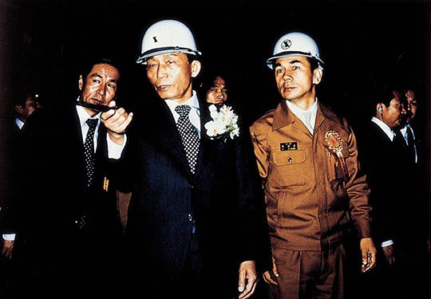

보도일 2014-07-15출처 조선일보 프리미엄조선 연재
<프롤로그> 왜 위대한 만남인가?(中)
정치냐 경제냐, 이 갈림길이 박태준의 눈앞에 나타난 때는 1963년 9월이었. 1948년 남조선경비사관학교(육군사관학교) 강의실에서 스승과 제자로 처음 만난 박정희와 박태준은 1950년대 후반부터 깊은 대화의 술자리를 시작하여 1960년 부산 군수기지사령부에서 거사를 꿈꾸는 사령관과 인사참모로 지낸 뒤, 국가재건최고회의 의장과 상공담당 최고위원의 관계에서 1963년 가을을 맞았고, 이때 박정희는 군복을 벗고 윤보선과 대통령선거의 진검승부를 앞둔 공화당 대통령 후보였다.
1963년 9월 어느 날, 두 인물은 독대한다. 박정희가 박태준에게 군으로 돌아갈 거냐고 묻자, 그는 권력의 단물을 빨다가 돌아가면 군대에 불평만 늘어난다며 고개를 젓는다. 박정희는 답을 알고 있었다는 듯이 “조사를 시켜봤는데 당선에 문제가 없으니 고향에서 국회의원으로 출마하라”고 권유한다. 박태준의 답이 걸작이다. “저를 잘 아시지 않습니까? 불합리의 종합판 같은 정치에 나가서 순종 못하고 반대를 해대면 각하께서 골치 아프실 거 아닙니까?” 이러고는 미국 유학의 뜻을 밝힌다.
대선에서 승리한 박정희는 1964년 정초에 청와대로 박태준을 불러 유학을 말리고 일본 특사로 파견하면서 “집도 없던데 집 마련에 보태라”며 하사금을 내리고(박태준은 노년에 그 집을 팔아 사회에 기부한다), 1964년 12월에는 그때 한국의 최대 달러박스였던 대한중석에 박태준을 사장으로 앉힌다. 만성적자의 대한중석을 한 해 만에 흑자체제로 돌려놓는 발군의 경영실력을 발휘한 박태준. 그를 기다리는 다음 차례는 바로 박정희가 맡기는 종합제철이었다.

1973년 7월 3일 포항제철 1기 종합준공식 후 박태준 사장의 안내로 공장을 시찰하는 박정희 대통령이 지휘봉으로 어딘가를 가리키고 있다. 1973년 7월 3일 포항제철 1기 종합준공식 후 박태준 사장의 안내로 공장을 시찰하는 박정희 대통령이 지휘봉으로 어딘가를 가리키고 있다.세계 최고 제철소 건설의 ‘포스코 25년’을 대하드라마에 비유한다면, 제1부는 포항제철소이고 제2부는 광양제철소이다.
포항제철소의 제작과 기획은 박정희이고, 연출과 주연은 박태준이다. 박정희는 1961년부터 종합제철을 기획하지만 1965년 미국 방문을 통해 구체화하고, 이때부터 지목하고 있던 박태준을 1967년 11월 연출자로 공식 임명하여 1968년 4월 1일 포항종합제철을 탄생시킨다. 그러나 제작비 조달이 심각한 문제로 대두한다.
그해 11월 영일만을 방문한 박정희가 “이거 남의 집 다 헐어놓고 제철소가 되기는 되나”라고 쓸쓸히 독백한 까닭은 미국, 영국, 이탈리아, 독일(서독), 프랑스 등 서방 5개국의 8개 철강사가 한국정부에 약조한 차관 조달의 길이 막혀 있었기 때문이다.
결국 그것은 막혔다. 대하드라마는 방영 준비 단계에서 제작비가 없어 무산될 위기에 봉착했다. 그러나 돌파구를 뚫는다. 1969년 2월 절망적인 상황에서 연출자 박태준이 대일청구권자금 전용의 아이디어를 내고, 제작자 박정희가 그것을 승인한다. 그날부터 박태준은 박정희의 특명을 받아 일본 정계와 철강업계 지도자들을 직접 찾아가 설득하고, 그 성과 위에 그해 8월 양국 정부 차원의 공개적 실무 교섭을 시작하게 되며, 마침내 1970년 4월 1일 박정희는 박태준, 김학렬(당시 부총리)과 나란히 서서 착공 버튼을 누른다.
박정희는 포항제철을 13차례(1973년 7월의 1기 준공 전에 6번, 그 후에 7번)나 방문한다. 그만큼 관심과 의지와 애정이 각별했다. 그리고 그는 1978년 가을에 ‘박정희와 박태준의 관계’가 정해놓은 어떤 운명에 따라 박태준에게 마지막 선물을 하듯 ‘정주영의 현대’를 물리고 ‘박태준의 포철’에게 제2제철소 건설임무를 맡긴다.
대하드라마는 1980년부터 제2부다. 대통령들(전두환, 노태우)의 재가를 받긴 했으나 제2부는 제작, 기획, 연출, 주연 모두를 박태준이 맡아야 했다. 그러나 박태준은 박정희와의 약속이나 박정희가 맡긴 사명의 참뜻을 잊은 적이 없었다. 이것이 1992년 10월 3일 박정희의 유택을 찾아가게 한다. 아무도 예측 못한, 오직 박태준만이 깊은 가슴속에 간직해온 그날, 그는 세상을 떠난 대하드라마 제작·기획자에게 울먹이며 보고한다.
<각하, 포항제철은 빈곤타파와 경제부흥을 위해서는 일관제철소 건설이 필수적이라는 각하의 의지에 의해 탄생되었습니다. 그 포항제철이 어제, 포항·광양 양대 제철소에 연산 조강 2천100만 톤 체제의 완공을 끝으로, 4반세기에 걸친 대장정을 마무리하였습니다.>
박정희가 서거한 1979년 10월, 그때 이미 ‘영일만의 기적’으로 칭송 받으며 세계적 철강기업으로 성장해 있었던 포항제철의 성공 요인은 무엇인가? 하버드대, 스탠포드대, 미쓰비시종합연구소 등이 여러 요인을 밝혀내면서 한결같이 ‘박태준의 탁월한 리더십과 능력’을 빼놓지 않았다. 그러나 가장 중요한 것은 바로 ‘박정희와 박태준의 독특한 인간관계’였다. 이대환은 평전 『박태준』에서 이렇게 관찰하고 있다.
<박정희는 박태준의 순수하고 뜨거운 애국적 사명감만은 범할 수 없는 처녀성처럼 옹호했다. 정치권력의 방면으로 기웃거리지 않고 당겨도 단호히 뿌리치는 박태준의 기개를 높이 보았다. 여기엔 한 인간과 한 인간, 한 사내와 한 사내로서 오직 둘만이 온전히 알아차릴 수 있는 서로의 빛깔과 향기가 있었을 것이다. 이러한 박정희와 박태준의 독특한 인간관계는 박태준이 자신의 리더십과 사명감을 신명나게 발현할 수 있는 양호한 정치적 환경을 조성해주었다.>
‘독특한 인간관계’란 ‘완전한 신뢰의 인간관계’를 뜻한다. 이것은 두 인물의 만남을 20세기 대한한국 산업화시대의 ‘위대한 만남’으로 나아가게 하는 레일이었다.
2014년 7월 8일 [프리미엄 조선 연재]